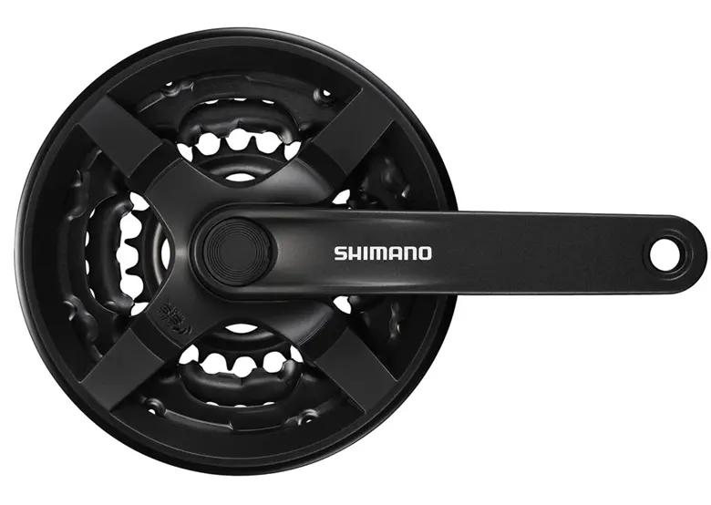
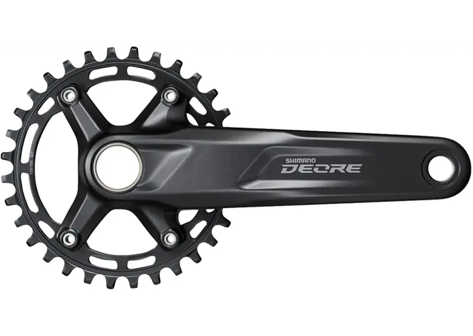
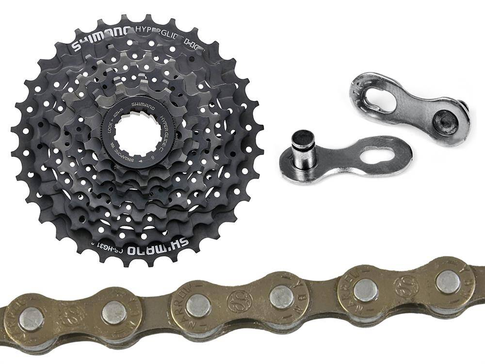
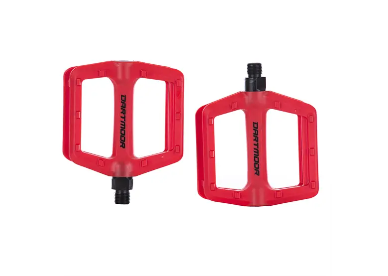
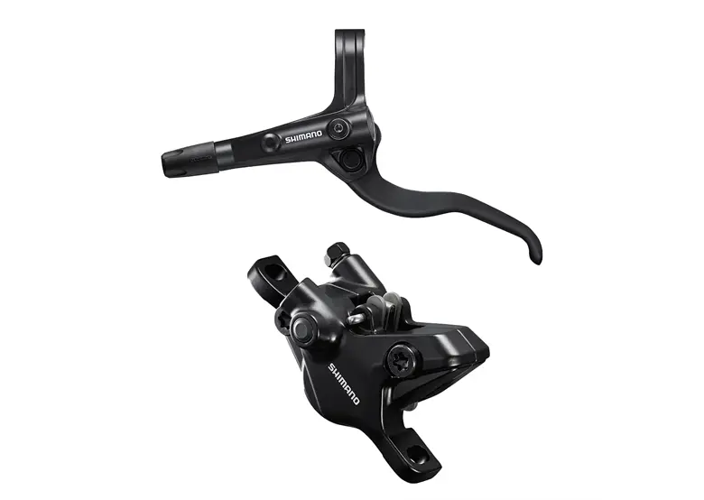

SHIMANO FC-TY301 Korba
Cena: 54.99 PLN

SHIMANO Deore FC-M5100
Cena: 299 PLN

Zestaw: łańcuch i kaseta
Cena: 69 PLN

Pedały Dartmoor Candy
Cena: 64 PLN

Koło przednie KELLYS Wasper
Cena: 129 PLN

Koło tylne KELLYS Wasper
Cena: 129 PLN

SHIMANO Alivio BL-MT401
Cena: 119 PLN